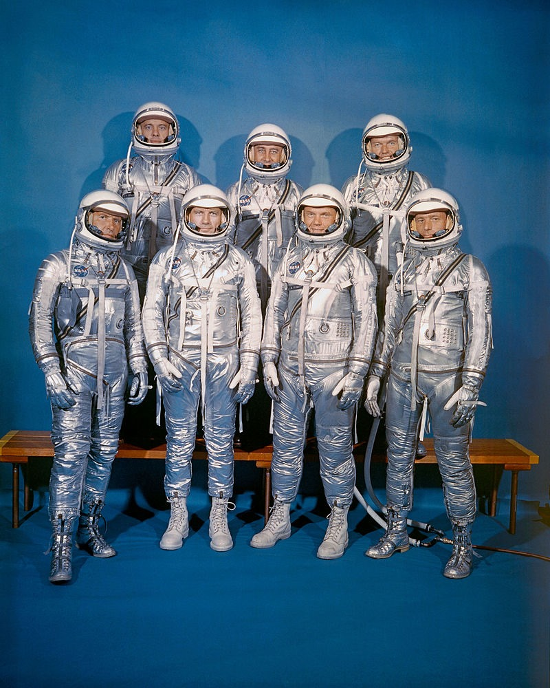

ChatGPT In 1959, NASA selected its first team of astronauts, which
became known as the Mercury Seven. This group was the core of the
Mercury Program, which aimed to send the first American into space
as part of the space race with the Soviet Union.
The team consisted of seven men: Alan Shepard, John Glenn, Gus
Grissom, Walter Schirra, Deke Slayton, Gordon Cooper, and Scott
Carpenter.
Alan Shepard became the first American in space in 1961, while John
Glenn achieved a major feat as the first American to orbit the Earth
in 1962.
The rest of the team contributed to space missions and scientific
experiments that were crucial to the development of space
exploration technologies and concepts.
The seven pioneers were symbols of courage and ingenuity during a
period filled with technical and political challenges.
They helped pave the way for later major space missions, such as the
Apollo program, and inspired new generations of scientists and
explorers.
Their achievements formed the foundation of the American space
program and established the United States' position in space
exploration.
